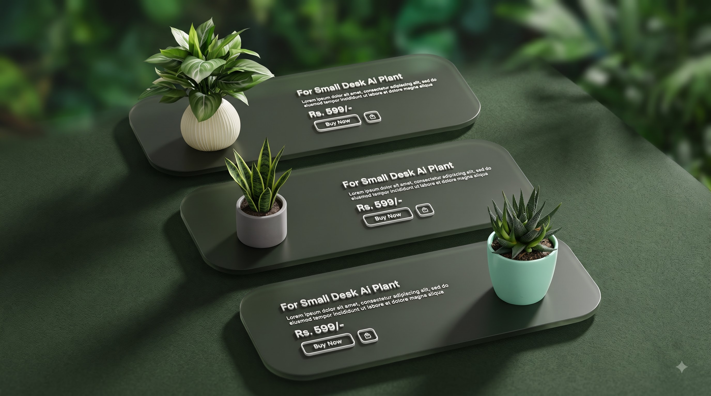
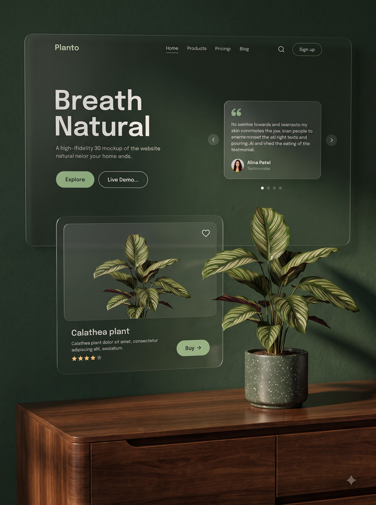
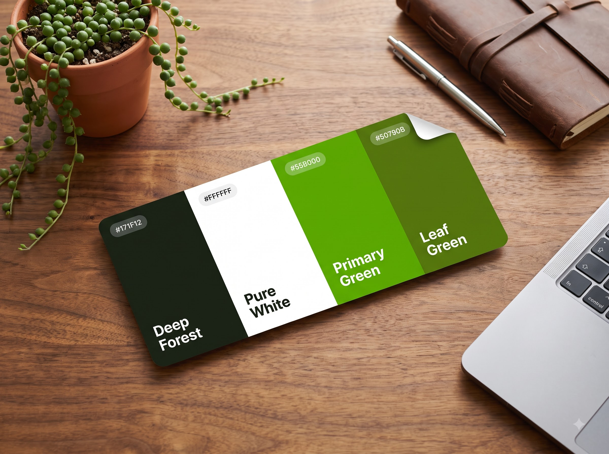
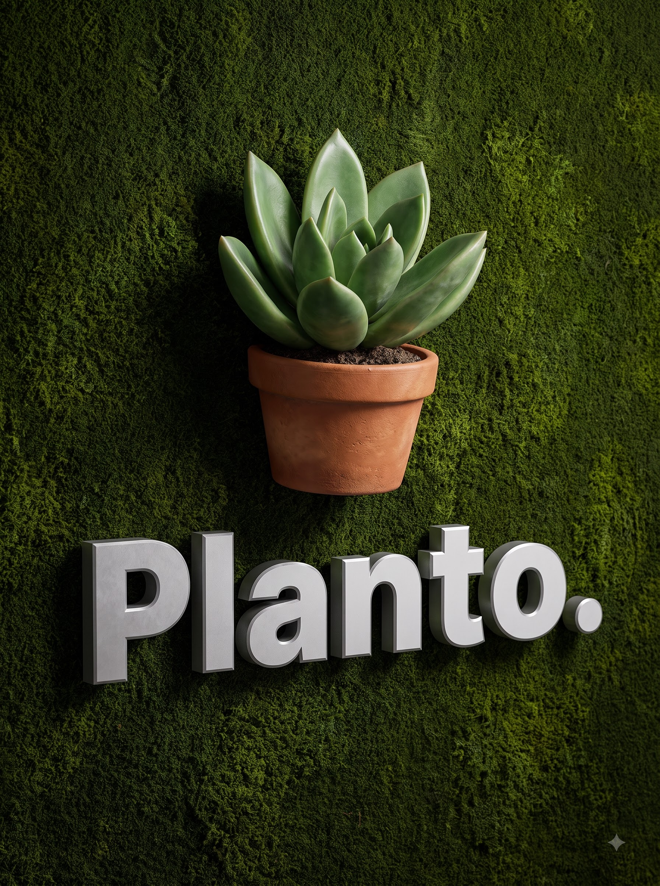

Product Design
"Turning a standard e-commerce plant store into an atmospheric, story-driven shopping experience — where every screen makes indoor gardening feel aspirational."
Client: Planto
Premium plant e-commerce · Desktop web landing page
Planto is a premium plant shopping landing page built to make indoor gardening feel like a lifestyle choice, not a utility purchase. Standard e-commerce grids fail to communicate the beauty, care requirements, and environmental value of plants — leading to low engagement and hesitant buyers. The design uses a dark botanical atmosphere, parallax greenery panels, and glassmorphic product cards to present plants as aspirational living décor.
Key Features
- Style: Dark botanical — deep forest background, glowing primary green accent, glassmorphic tiles, editorial layout.
- Target Audience: Urban millennials (25–40) interested in interior design, sustainability, and wellness lifestyle.
- Atmospheric hero section with large-scale plant photography and "Breathe Natural" display headline framing the brand identity.
- Glassmorphic product cards: semi-transparent tiles with consistent grid, visible pricing, and mini cart triggers.
- Educational plant care info woven directly into the product detail flow — building confidence before checkout.
- User-generated reviews section and curated "Best for Your Space" collections to personalise the shopping journey.
- Responsive bento grid layout merging editorial storytelling with e-commerce conversion architecture.

Screens






Plants deserve better than a white-background grid.
Online plant shopping typically means flat catalogue grids with no sense of texture, environment, or care. Products lack context — buyers can't visualise plants in their space, don't understand care requirements, and have no emotional connection to what they're purchasing. The result: high bounce rates and abandoned carts before checkout.
Turn a store into an atmosphere.
Planto's design leads with environment before product — a dark, rich botanical canvas that places plants as the hero before any grid appears. Glassmorphic product tiles maintain the atmospheric depth while surfacing pricing and details cleanly. Educational content and user reviews are embedded directly in the product flow, removing hesitation at the exact moment buyers need confidence.
Atmosphere as a conversion tool.
Planto demonstrates the ability to build a full web layout system where brand storytelling, atmospheric art direction, and e-commerce conversion architecture work as one — not in competition with each other. The dark botanical aesthetic creates an immediate emotional impression that generic catalogue stores cannot replicate.
← Back to Home